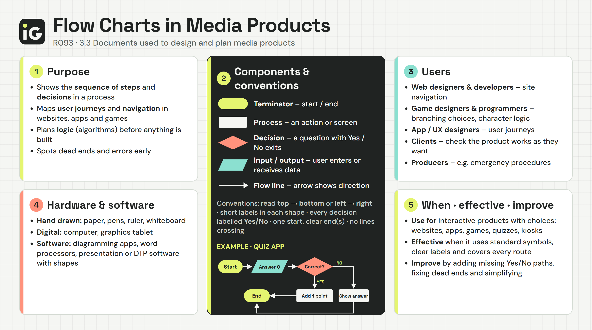

A flow chart is a diagram that shows the steps and decisions in a process.
In media, flow charts plan how a user moves through an interactive product and what happens at every choice.
What Is a Flow Chart?
A flow chart is a pre-production document used to design and plan media products. It uses standard
symbols joined by arrows to show the order things happen in, and the points where a
decision changes what happens next.
It breaks a process down into separate steps.
It shows every decision and the route taken for each answer (usually Yes / No).
It is planned before the product is built, so problems are fixed on paper, not in code.
What the Specification Expects You to Know
For flow charts (R093 Topic Area 3.3) you should be able to explain:
The purpose of a flow chart.
Its components and conventions.
The hardware and software used to create one.
Who the users of a flow chart are.
When a flow chart is appropriate to use.
What makes a flow chart effective, and how to improve one for users in a given context.
Note: you will not be asked to create a flow chart from scratch, but you may be asked to read, complete, evaluate or improve one.
What the Specification Says
Flow charts
Use this checklist to make sure you can cover every part of this topic.
Know the purpose of each document
Know the components and conventions of each
Know the hardware and software used to create each, and its users
Know when each is appropriate, what makes it effective, and how to improve it for users in given contexts
R093 · 3.3 Documents used to design and plan media products · Flow chart
Teams sketch flow charts on whiteboards and paper to agree how a product will work, then redraw them digitally to share with the client and developers.
Find dead ends and missing routes early
Agree the user journey before coding starts
Key Terms
Terminator
The start or end symbol – a rounded rectangle.
Decision
A diamond containing a question with labelled exits.
Process
A rectangle showing an action or step.
Input/output
A parallelogram showing data in or out.
Exam Tips & Common Mistakes
✔ Exam tips
Use correct symbol names
Say who uses the flow chart and why
Suggest improvements for its users
✘ Common mistakes
Don't use a flow chart for linear, static products
Don't leave decisions without labelled exits
Don't confuse flow charts with wireframes

Flow Charts at a Glance
Two things to remember: the symbols a flow chart uses, and where flow charts are used in the media industry.
Symbols & Conventions
Standard shapes that everyone can read.
Terminator (rounded rectangle/oval) – the start and end.
Process (rectangle) – an action, task or screen.
Decision (diamond) – a question with an exit for each answer, labelled Yes / No.
Input / output (parallelogram) – data entered by, or shown to, the user.
Flow lines (arrows) – show the direction of the flow.
Conventions: top to bottom or left to right, short labels, one start, clear end(s).
Start · Process · Decision · Arrow
Flow Charts in Media Products
Wherever a user makes choices, a flow chart plans it.
Websites: navigation between pages, menus and forms.
Apps: user journeys such as sign-up, log-in and checkout.
Games: branching story choices, levels and character logic.
Quizzes & e-learning: right/wrong answers and scoring.
Interactive kiosks & DVD menus: what each button does.
Production processes: e.g. a TV studio emergency procedure.
Navigation · Logic · Journeys
Purpose of a Flow Chart
The purpose of a flow chart is to show the sequence of a process and the decisions
that change it, so that a team can plan exactly how an interactive product will work before it is built.
Plan navigation – which page or screen links to which, and how the user gets back.
Plan user journeys – the steps a user takes to complete a task, such as buying a ticket.
Plan logic (algorithms) – what the program should do in each situation, for example in a game.
Find problems early – dead ends, missing routes and endless loops can be spotted and fixed on paper.
Communicate the plan – the client and the team can see and agree how the product will behave.
Components
Terminator – a rounded rectangle or oval marking where the process starts and ends.
Process – a rectangle for an action, e.g. "Show home page" or "Add 1 point".
Decision – a diamond containing a question, e.g. "Password correct?", with a labelled arrow for each answer.
Input / output – a parallelogram for data going in or out, e.g. "User enters email".
Flow lines – arrows connecting the symbols and showing the direction of travel.
Labels – short, clear wording inside every symbol and on decision exits.
Conventions
Read from top to bottom or left to right.
Every chart has one start and at least one end.
Every decision has an exit for each possible answer.
Every symbol connects to the next step, and arrows avoid crossing where possible.
Who Uses Flow Charts?
Web designers and web developers – to plan site navigation, forms and how pages link together.
Game designers and programmers – to plan branching choices, levels and the logic for characters.
App and interactive designers – to plan user journeys through screens and menus.
Animators – to plan interactive or branching animated sequences.
Clients – to check and approve how the finished product will work.
Producers and directors – to set out processes, such as what to do in an emergency in a studio.
Hardware and Software Used to Create Flow Charts
Hand drawn: paper, pencils, pens, a ruler or a template, or a whiteboard for team planning.
Digital hardware: a computer or laptop, a tablet with a stylus, or a graphics tablet.
Software: dedicated diagramming software (e.g. Microsoft Visio, Lucidchart, draw.io), or the shape tools in word processing, presentation and DTP software.
Digital advantages: easy to edit and rearrange, neat standard shapes, and easy to share with the client.
Hand-drawn advantages: quick for early ideas, no software needed, good for group brainstorming.
When Is a Flow Chart Appropriate?
Use a flow chart when a product has choices, branches or logic –
that is, when what happens next depends on what the user does.
Appropriate: websites, apps, video games, interactive quizzes, e-learning, kiosks and DVD/Blu-ray menus.
Less appropriate: linear products such as a poster, a radio advert or a short film – a visualisation diagram, script or storyboard is better.
A flow chart shows how it works; a wireframe shows what each screen looks like. Interactive products often use both.
What Makes a Flow Chart Effective?
It uses the standard symbols correctly, so anyone can read it.
Every route is complete – no dead ends and no missing Yes/No exits.
Labels are short and clear, using the names of real pages or actions.
It is logical and easy to follow, with a clear direction and few crossing lines.
It matches the client brief and the needs of the target audience.
How to Improve a Flow Chart
Swap any wrong shapes for the correct symbols (e.g. a question in a rectangle should be a diamond).
Add any missing routes, such as what happens when a password is wrong.
Add a key if the users (e.g. the client) are not familiar with the symbols.
Make labels specific ("Show basket page", not "Next bit").
Simplify long journeys so users reach their goal in fewer steps.
Use colour coding for different sections, such as the shop and the account area.
Read, fix and complete flow charts for real media products, then practise the planning documents that sit alongside them.
New game · Flow charts
Flow Chart Fixer
Name the symbols, match flow charts to media products and their users, and spot what is wrong with flow charts
for websites, apps and games.
DiagramsSymbolsFix the flow
Pre-production
Document Doctor
Choose the right planning document for each task, including when a flow chart is the best choice.
MCQsPlanning docsComponents
Pre-production
Pre-Production Toolkit
Match planning documents, such as flow charts, wireframes and storyboards, to the right design need.
MatchingPlanning docsScenarios
All topics
iMedia Genius
Take on mixed R093 questions, including pre-production document questions that mirror the real exam.
Exam-styleWhole specMixed difficulty
Exam Practice – Flow Charts (AI Marker)
Write your answers in the boxes below, then click Build & Copy AI Marking Prompt. Choose an AI tool and paste the prompt to get examiner-style marking and feedback.
Q1. Identify the flow chart symbol used to show a decision. (1 mark)
Technique: Name the shape. One word can be enough.
Q2. Explain one reason why a web developer would use a flow chart when planning a website. (2 marks)
Technique: Make one point about what the flow chart shows, then develop it by explaining how that helps the web developer or the finished website.
Q3. Describe three conventions that should be followed when producing a flow chart. (3 marks)
Technique: Give three separate conventions. Think about symbols, direction, labels and routes.
Q4. A games company has produced a flow chart for the log-in screen of a mobile game. The "Password correct?" decision only has a "Yes" route. Explain two ways the flow chart could be improved for the programmers who will use it. (4 marks)
Technique: Give two different improvements. For each, say what should change and explain why it helps the programmers.
Q5. A museum is creating an interactive touch-screen kiosk where visitors choose a gallery, watch short videos and answer a quiz.
The design team are deciding whether to plan the kiosk using a flow chart, a wireframe or both.
Discuss the suitability of a flow chart for planning this product. (9 marks)
Technique: Discuss what a flow chart would and would not help with for this kiosk. Refer to the people who use the document and to the visitors, compare it with other documents where relevant, and reach a justified conclusion.
Level 2 → Level 3 Boost (Q5)
As you type, this will spot what's missing for top-band answers.
Start typing your answer to see tailored targets.
Open an AI tool:
Can You Now…?
Explain the purpose of a flow chart and name the media products that use them.
Identify the standard symbols and conventions of a flow chart.
Describe the hardware, software and users of flow charts.
Judge when a flow chart is appropriate, what makes one effective and how to improve one.